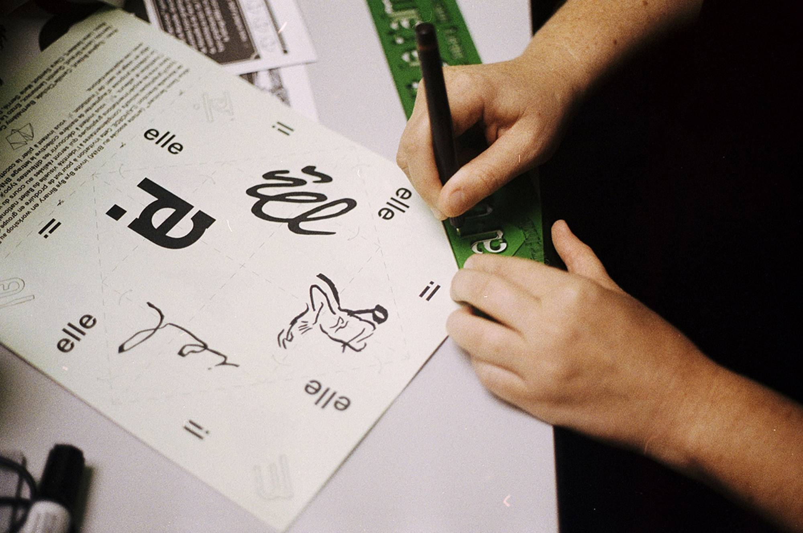
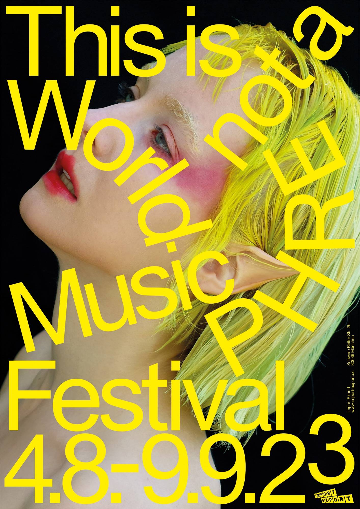
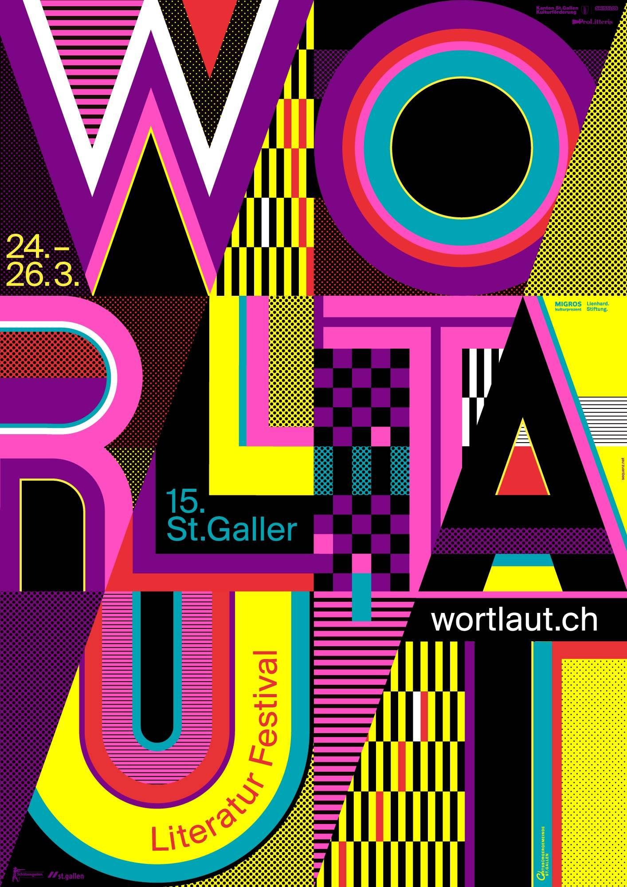
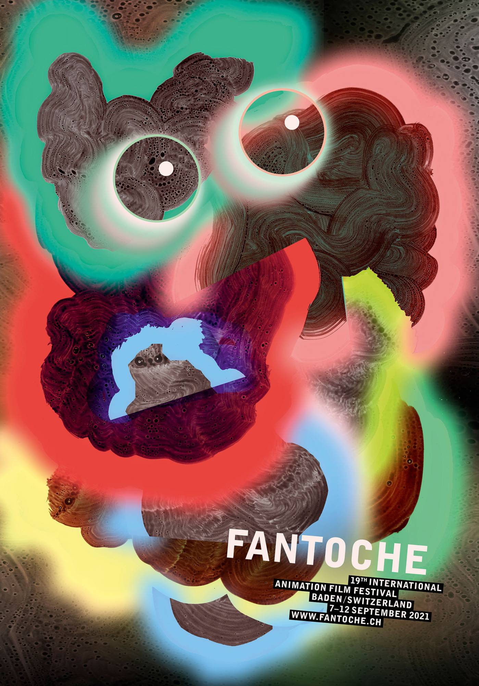
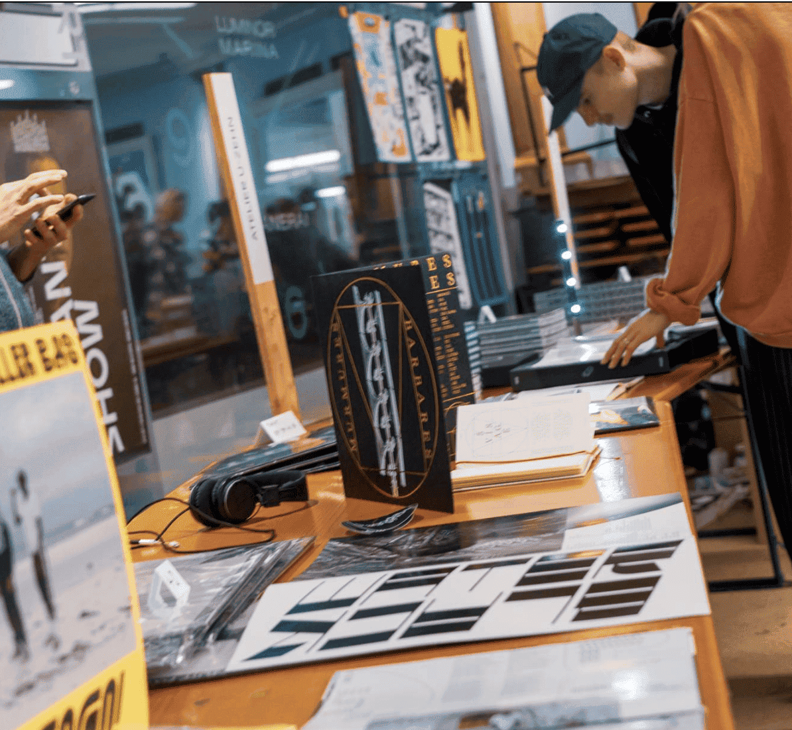
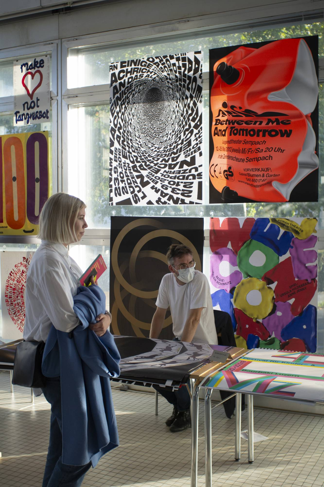
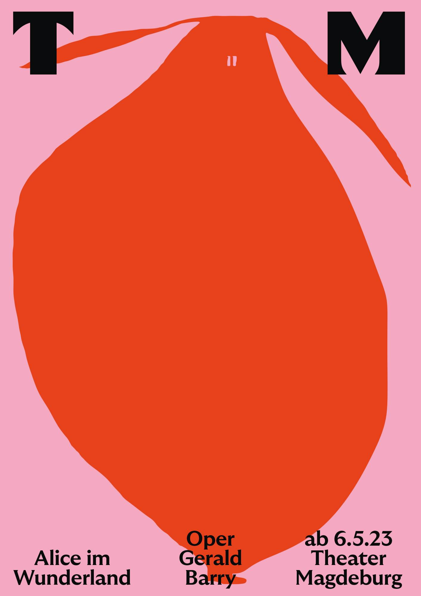
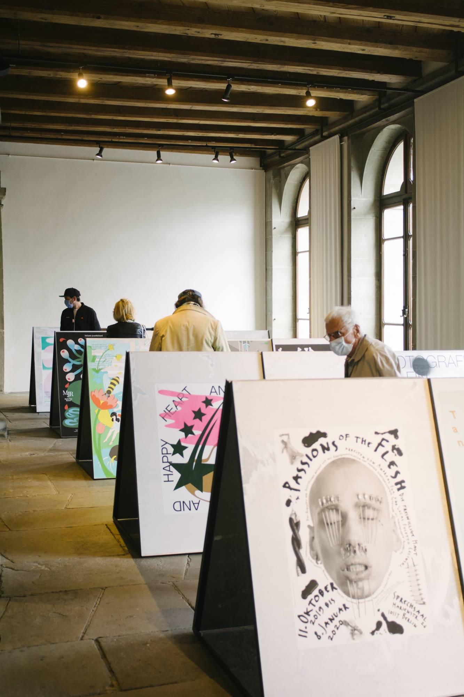

Exposiciones, concursos y encuentros que celebran el afiche como forma de arte. Una plataforma para
que el diseño gráfico dialogue con el espacio público.
Programación del Festival
WORKSHOP

Diseño tipográfico experimental
Explorá nuevas formas de diseñar letras con materiales no convencionales. Este taller propone
dejar de lado las herramientas digitales para volver al trazo manual, la textura, el error y el
azar como parte del proceso creativo.
CONFERENCIA

Afiches que hablan
La diseñadora suiza Sarah Infanger comparte su mirada sobre cómo un afiche puede generar impacto
emocional. Tipografía, composición y color como herramientas narrativas para decir más con
menos.
EXHIBICIÓN

Weltformat Poster Show
La muestra central del festival reúne los mejores afiches recibidos en la convocatoria
internacional. Un recorrido visual que celebra el cartel como medio de expresión cultural y
política.

Exploración visual: afiches sin reglas
Una muestra dedicada al cartel como experimento visual. Afiches que rompen con la estructura
tradicional: tipografías distorsionadas, composiciones no lineales y recursos gráficos que
priorizan la expresión sobre la legibilidad.

After en la plaza
Una noche para conectar, relajarse y compartir. Música en vivo, feria gráfica, tragos y
conversación entre diseñadores, artistas e invitadxs del festival. Abierto al público y al aire
libre.


Inscripción 2025 abierta

Visitá la exhibición
La feria ya está abierta al público. Sumate a descubrir los afiches seleccionados de este año:
diseño, pensamiento y provocación en un recorrido visual único.